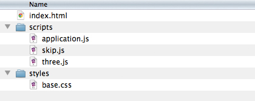
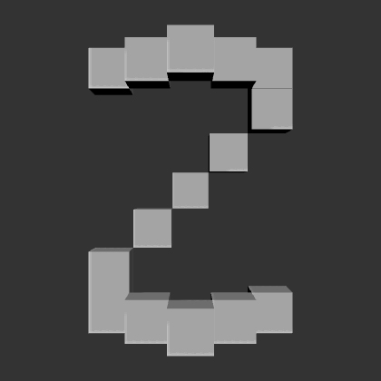

Homework
Up until now we’ve been working with squares. It’s time to swap those squares for cubes. Going forward we'll be using the Three.js framework by Ricardo Cabello (aka. "Mr Doob.") (You can find more information on Three here: http://mrdoob.github.com/three.js) But don’t worry about the details yet. Consider this homework assignment a simple sneak peek ahead of discussing Three properly during our next class.
1. Download the template
To begin, download this Three.js template here: threeTemplate.zip. This is what you will find inside the package:

Drop the index.html file into your web browser.
If you receive an error, or don't see any cube appear this means your browser or hardware does not support WebGL rendering.
Try using Chrome or Firefox instead.
(If you prefer Opera or Safari some quick searching online will yield instructions for enabling WebGL.)
2. Read the comments
Open the scripts/application.js
in your text editor.
You will see that this source code is heavily commented.
This is for your benefit.
Have a look through the comments.
What makes sense to you so far?
What questions might you ask in our next class?
3. Write your initial
There are four simple demos.
Change the demoNumber variable on line 35 to see the other demos.
Use your mouse to move around inside the demos.
Your task this week is simple: Read through those comments and alter the 4th demo to draw the first initial of your name using cubes. We’ll look at these on screen during class on Friday, so no need to send me any files ahead of time. The code already comes with an example of the letter Z. (Bonus points if your letter uses cubes that sit at different depths on the Z-axis.)
